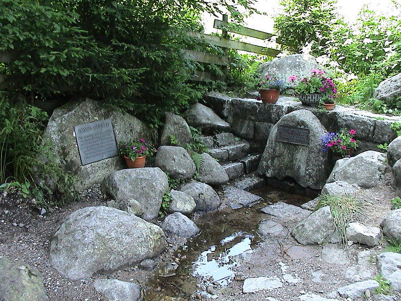
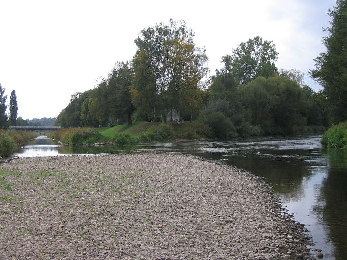
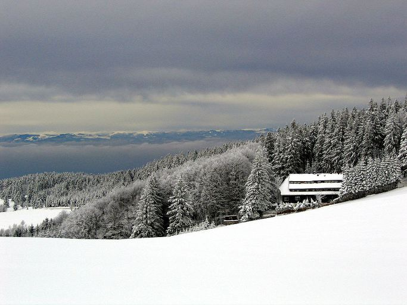
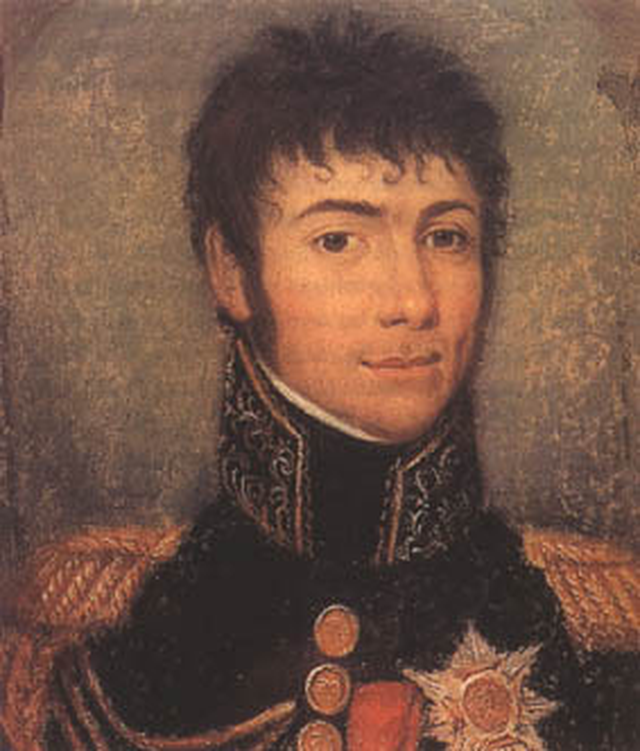
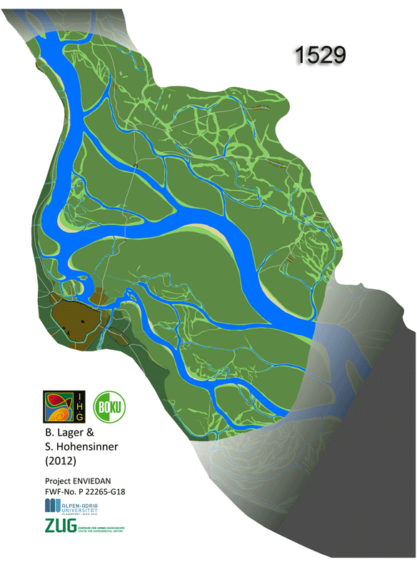
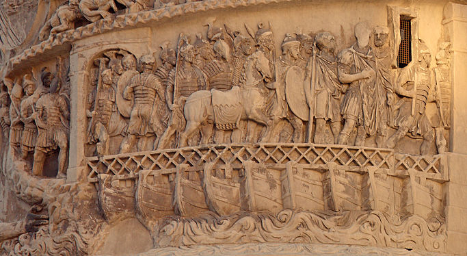
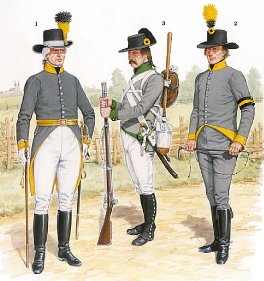

아스페른-에슬링(Aspern-Essling) 1편 - 도나우 강의 푸른 물결
게시: 2017-02-05T22:56:43+09:00
(ㄹ혜와 가족 여행 때문에 오랫동안 중단되었던 제5차 대불동맹전쟁 다시 시작됩니다. 짧더라도 매주 연재하도록 노력해보겠습니다.)
지난 편에서는 1809년 5월 13일 나폴레옹이 오스트리아의 수도 빈(Wien)을 다시 정복하는 모습과, 5월 17일 카알 대공이 린츠(Linz)에서 반격을 꾀했으나 처참하게 실패하는 모습을 보셨습니다. 이제 이야기는 운명의 아스페른-에슬링(Aspern-Essling) 전장을 향해 달려갑니다.
1809년 5월, 모든 상황은 나폴레옹의 최종 승리를 낙관하게 했습니다. 적국의 수도도 점령했고, 군의 보급과 사기도 매우 양호했으며, 병력도 프랑스군이 더 우세했습니다. 1805년 아우스테를리츠 전투를 앞둔 상황도 지금처럼 유리하지는 않았습니다. 당시엔 물러난 오스트리아군이 러시아군과 연합하여 저항을 준비했으나, 지금의 오스트리아군은 아무도 도와줄 동맹이 없는 고립무원의 상태였습니다. 또 1805년 당시 어떻게 나올지 모르는 프로이센의 존재가 나폴레옹의 뒤를 위협하고 있었지만 지금 프로이센을 포함한 독일 제국들은 나폴레옹에게 협력하고 있는 입장이었습니다. 1809년 5월 12일 뮈라에게 보낸 편지에서 나폴레옹은 '내 군대가 이토록 잘 정비되고 숫자가 많았던 적이 없었다'라고 할 정도로 나폴레옹 휘하 독일 방면군의 준비 태세는 우수한 편이었습니다.
그럼에도 불구하고 카알 대공을 주축으로 한 오스트리아군의 반격 준비는 1805년 당시에 비해 훨씬 견고한 것이었습니다. 먼저, 그동안 절치부심하며 준비를 해놓은 군단들이 아직 대부분 건재했습니다. 그리고 타보르(Tabor) 다리가 끊긴 것이 오스트리아군의 숨통을 틔워 주었습니다. 1805년 당시에는 11월 13일 비엔나 점령 직후 도나우 강을 건널 유일한 다리인 타보르(Tabor) 다리를 란과 뮈라가 기만작전으로 무사히 손에 넣었기 떄문에, 프랑스군은 사람과 말, 대포와 물자를 매우 손쉽게 도나우 강 좌안, 즉 동쪽으로 보낼 수 있었습니다. 그러나 같은 실수를 반복할 정도로 멍청하지는 않았던 오스트리아군이 이번에는 다리를 파괴했기 때문에, 카알 대공과 나폴레옹 사이에는 볼가 강을 빼면 유럽 최대의 강인 도나우가 흐르고 있었습니다.

(브렉(Breg) 강의 수원지이라고 합니다. 저는 큰 강의 시작점은 어떤 모양인지 항상 궁금했는데, 이렇게 잘 정의되고 보존되는 곳도 있긴 있네요.)

(사진 속 오른쪽 뒤에 보이는 브리가흐(Brigach) 강이 왼쪽의 브렉(Breg) 강과 합류하여 사진 아래 오른쪽의 도나우 강이 되는 지점입니다. 독일의 양수리라고 할 수 있겠네요.)
도나우 강은 남부 독일 지방인 뷔르템베르크(Baden-Württemberg)에서 시작하여 바이에른(Bayern)과 오스트리아, 헝가리, 불가리아, 루마니아 등을 거쳐 흑해로 흘러가는 큰 강입니다. 도나우 강의 수원지는 '검은 숲'(Schwarzwald) 지대인데, 이 곳은 독일 지역 특유의 춥고 습기찬 겨울 덕분에 겨우내 많은 눈이 쌓이는 지역입니다. 봄이 되면 이 눈들이 조금씩 녹아 흘러 내리므로 도나우 강의 수위는 여름으로 갈 수록 점점 높아지는데, 이 때문에 당시 빈 지역은 많은 경우, 6월이 되면 도나우 강이 범람하여 크고 작은 피해를 내곤 했습니다.

(눈에 덮힌 검은 숲 슈바르츠발트입니다. 겨울에 눈이 많이 와야 그렇게 쌓인 눈이 봄 내내 조금씩 녹아내리면서 저 아래 평원을 비옥하게 적셔 줄 수 있습니다. 우리나라처럼 여름에 비가 몰아서 오고 겨울이 건조한 편인 경우, 여름에 홍수가 날 뿐 봄 가뭄에 시달리기가 쉽지요.)
지리와 역사에 대한 독서량도 많았고, 또 정보 수집의 중요성을 잘 알고 있었던 나폴레옹이 그런 사실을 모르고 있었을 리가 없습니다. 나폴레옹은 6월이 되기 전에 강을 건너지 못하면 이 전쟁이 부담스러울 정도로 길어질 수 있다는 점을 잘 알고 있었습니다. 그렇기 때문에 타보르 다리가 파괴된 것이 더더욱 아쉬웠습니다.
생각해보면 나폴레옹은 과거 이탈리아 전선에서 적의 저항을 앞에 두고도 포(Po) 강이나 아디제(Adige) 강을 보트를 이용해 잘도 건넜고, 또 그럴 때마다 승리를 거두었습니다. 그러나 지금은 상황이 달랐습니다. 도나우 강은 너비 80m 정도의 아디제 강과는 차원이 다른 큰 강이었고, 또 움직여야 하는 병력도 당시의 수천 명 단위가 아닌, 수만 명이었으니까요. 나폴레옹은 결코 '안 되면 되게 하라'식의 무책임한 정신력 신봉자가 아니었습니다. 그는 이번 작전을 위해서는 반드시 다리가 필요하다는 것을 잘 알고 있었습니다. 그는 공병대 사령관인 베르트랑(Henri Gatien Bertrand)에게 빈 근처에서 도하에 가장 적절한 곳을 찾아 다리를 놓을 것을 지시했습니다.

(베르트랑 장군입니다. 유복한 부르주와 가정 출신의 그는 일찍부터 군문에 들어가기 위해 예비 사관학교를 다니던 중 프랑스 혁명을 맞았습니다. 그는 자원병으로 군에 입대했고, 이집트 원정에 종군하면서 나폴레옹의 눈에 들어 대령으로, 이어서 준장으로 고속 승진했습니다. 그러나 원래 엔지니어는 아니었던 그는 아스페른-에슬링 전투에서 결과적으로 훌륭한 성과를 내지는 못한 셈이 되어버렸습니다. 그는 끝까지 나폴레옹을 따라 세인트 헬레나 섬까지 갔었고, 나중에 그곳에서 나폴레옹의 유해를 가지고 프랑스로 돌아온 것도 그였습니다.)
베르트랑이 찾아낸 곳은 비엔나에서 하류 쪽으로 약 8km 떨어진 지점인 에베르스도르프(Ebersdorf)라는 곳이었습니다. 여기서 넓은 도나우 강은 두 개의 섬에 의해 3개의 물길로 갈라졌습니다. 강의 우안, 즉 에베르스도르프에서 첫번째 섬 사이를 흐르는 첫번째 강 폭은 약 450m 폭이었습니다. 두 섬 사이의 강폭은 약 225m, 그리고 두번째 섬과 강의 좌안 사이의 강 폭은 약 135m였습니다. 꽤 큰 섬이었는데, 이렇게 징검다리 삼아 건널 섬이 두 개나 있다고 해도, 여전히 도나우 강은 너무 넓고 너무 깊었습니다. 이런 곳에 다리를 놓는다는 것은, 더군다나 적의 저항 하에 그렇게 한다는 것은 당시 기술로는 불가능한 일이었지요.

(도나우 강의 빈 주변 평원은 전형적인 범람원이라 세월의 흐름에 따라 계속 지형이 변해왔습니다. 그림 소스 및 도나우 강 정리의 역사에 대해서는 https://seeingthewoods.org/2013/06/05/danube-floods-present-and-past-exploring-historic-precedents-through-the-arcadia-project/ 참조...)
하지만 완전히 불가능한 것도 아니었습니다. 부교(pontoon)이라는 대안이 있기 때문이었지요. 전쟁에서 부교가 사용된 것은 꽤 오래된 일입니다. 제2차 페르시아 전쟁때 크세륵세스도 헬레스폰트 해협에 2km가 넘는 부교를 놓고 소위 백만대군을 아시아에서 유럽으로 이동시켰고, 나폴레옹이 건너야 하는 도나우 강도 마르쿠스 아우렐리우스 황제의 로마군이 부교를 놓고 건넌 바 있었습니다. 거의 2천년 전의 사람들이 해낸 것을 19세기 초의 문명인들이 못 해낼 리가 없다고 나폴레옹은 믿었습니다.

(로마에 있는 마르쿠스 아우렐리우스의 기둥에 새겨진 부조입니다. 도나우 강에 부교를 놓고 건너는 로마 군단병들의 모습이 생생하게 그려져 있습니다.)
그리고 나폴레옹의 자신감에는 근거가 있었습니다. 나폴레옹은 포병 출신답게, 공병 부대에도 많은 신경을 쓴 편이었습니다. 특히 전투 공병대(sapeurs) 뿐만 아니라, 전문적으로 부교를 만드는 부대를 폰토니에르(pontonniers)라는 이름으로 별도 편성해놓고 있었습니다. 당시 유럽의 군대에는 공병대하면 요새 공략에 쓰이는 전투 공병대를 생각했지만, 나폴레옹의 그랑 다르메에서는 오히려 전투 공병대의 활약보다는 이 부교 건설대의 활약이 훨씬 더 컸습니다. 나폴레옹의 작전 스타일이 농성하는 요새에 대한 포위전보다는 기동전을 선호했기 때문이었습니다. 크고 작은 강이 많았던 유럽의 지형상, 그런 기동전을 위해서는 부교 건설대가 반드시 필요했던 것이지요. 나폴레옹의 그랑 다르메에는 부교 건설대가 무려 14개 중대나 있었고, 그들은 상당히 숙련된 기술 수준과 다양한 장비를 갖추고 있었습니다. 부교 건설대 1개 중대는 약 80척의 보트를 이용해 약 120~150m의 부교를 7시간 이내에 놓을 수 있었습니다.
게다가 뜻 밖의 횡재도 있었습니다. 프랑스군을 제외하면, 당시 유럽 군대에서 그래도 가장 부교 건설대가 잘 구비된 부대는 바로 오스트리아군이었습니다. 오스트리아군은 발칸 반도 등에서 오스만 투르크와 자주 싸워야 했기 때문에 역시 부교의 필요성을 절실히 느끼고 있었기 때문이었습니다. 가령 레겐스부르크 전투에서 도나우 강을 건너 후퇴할 때도 오스트리아군은 원래의 다리 옆에 부교를 추가로 놓고 강을 건넜지요. 그런 오스트리아군을 바로 직전인 4월 21일 란츠후트(Landshut)에서 격파하면서, 나폴레옹은 30문의 대포와 9천의 포로, 수천 대의 수송 마차와 함께 3개 중대 분량의 '매우 뛰어난' 부교 세트를 노획한 바 있었던 것입니다. 또, 에베르스베르크 앞에 놓인 두 섬, 특히 꽤 큰 편이었던 두번째 로바우(Lobau) 섬에는 숲이 무성하여, 이곳에서 부교 건설 준비 작업을 할 때 오스트리아군의 감시를 피할 수 있을 것 같았습니다.

(오스트리아 공병부대의 유니폼입니다. 확실히 전투부대에 비해서는 무척 소박한 것이... 영광의 선두에 서는 입장은 아니었습니다. 이공계의 운명이지요.)
나폴레옹은 부교에 의한 도하 작전의 성공을 확신했습니다. 그는 5월 19일 밤, 에베르스베르크에서 부교의 건설을 시작합니다. 그러나 나폴레옹은 물론, 카알 대공도 처음에는 별로 인식하지 못했던 요소 하나가 뜻하지 않게 아스페른-에슬링 전투에서 큰 변수로 작용하게 됩니다. 바로 1809년 봄 날씨가 평년보다 더 따뜻했다는 점입니다. 저 동쪽 하류에서 하찮은 인간들이 부질없는 싸움질을 하기 위해 부산을 떠는 동안, 도도한 도나우 강의 상류에서는 평소보다 더 많은 눈 녹은 물이 강으로 흘러들어 가고 있었고, 일부 강변의 나무들이 뿌리째 뽑혀 그 거센 물결에 실려 떠내려 오고 있었습니다.
--계속
Source : The reign of Napoleon Bonaparte by Robert Asprey
https://seeingthewoods.org/2013/06/05/danube-floods-present-and-past-exploring-historic-precedents-through-the-arcadia-project/
https://en.wikipedia.org/wiki/Danube
https://en.wikipedia.org/wiki/Breg_(river)
https://en.wikipedia.org/wiki/Grande_Arm%C3%A9e#Engineers
https://books.google.co.kr/books?id=3yrDCwAAQBAJ&pg=PT51&lpg=PT51&dq=napoleon+pontooneers&source=bl&ots=W6Rua_ProE&sig=KzjNFQaOaSy3h2OW7zBKEA_kp_Y&hl=en&sa=X&ved=0ahUKEwjElLKI9vjRAhUCjJQKHRO-CC0Q6AEILzAF#v=onepage&q&f=false